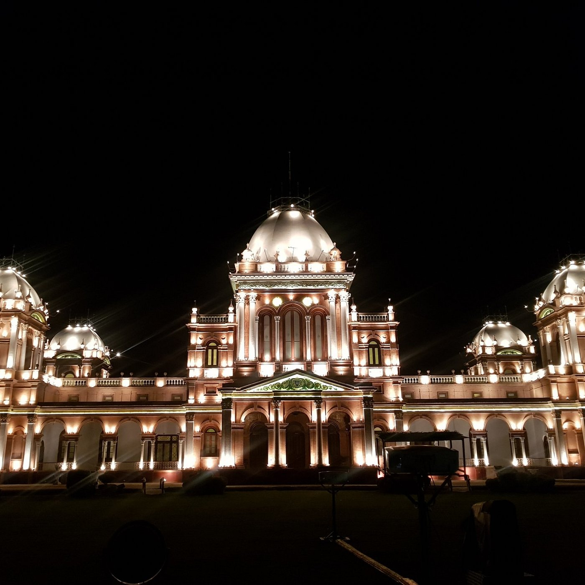

<div class="portfolio-single-load clearfix">
    <div class="custom-full-width-box">
        <div class="custom-container">
            <div class="custom-row align-items-center">
                <div class="custom-image-column">
                    
                </div>
                <div class="custom-text-column">
                    <h2 class="custom-heading">Bahawalpur</h2>
                    <p class="custom-paragraph">
                        The foundation of the city was laid in 1748 A.D. which was encircled having 7 gates and was declared the capital of the state. During the last quarter of the 19th-century abbasi, family constructed huge and elegant palaces Noor Mahal, Gulzar Mahal, Darbar Mahal, and Sadiq Garh Pal-aces.
                    </p>
                </div>
            </div>
        </div>
    </div><!-- .custom-full-width-box end -->

</div><!-- end single-project -->
